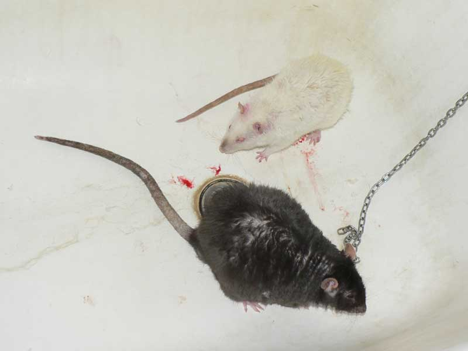

Прибыл новый крыс — Митрофан Копчёный (прибл. апрель 2012, Himalayan rex). Краткая история:
Monia: Сегодня заходила в ветклинику рядом с домом, купит кабактан доя своих простуженных. И увидела там Мотю. Ему около 2-х лет. Весит 350-400 грам, на глаз. По крайней мере меньше моей 495 граммовой Яськи. Пальчики на задних лапках деформированы. Его привезли больным в ветклинику и там и оставили. Предположительно 8 месяцев.
Вот такой тискательный:

Очень нравится на руках сидеть, спокойно сидит на плече — явно был совсем домашним и ручным. А потом его предали и бросили...

Попробовали познакомить сначала с Терабайтом в переноске.
Помотрели они друг на друга...

...обнюхались,..
...даже в шапкогнезде вместо порылись.

А потом ка-ак начнут драться!
Митрофан, понятно, победил.

Терабайту-то уже в мае три года будет.
Оставили их на ночь, но спали по разным углам и Терабайт
явно как-то опасался.
Расселили, а вечером решили знакомить с Октябрём.

Поместили обоих в ванну.
Они как-то так обнюхались,..
...и Митрофан решил, что можно гулять.

Но Октябрь напушился, стал боком — и надавал мелкому агрессору по ушам.

Заснять не успели, быстро было, это уже после разборки.

Кровь есть, но по мелочи. Мы даже не поняли, откуда, похоже, Мотя пододерматит содрал просто.
Продолжение следует!